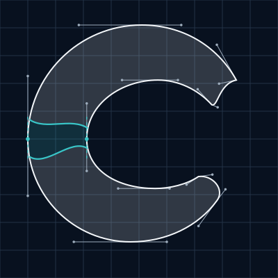
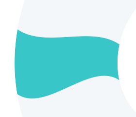

Curved Confluence C / A
Balanced
Judge the silhouette and real-size lockup first.
Monochrome / pure white


36px mark box · 24px Inter · Covan 600 / Labs 425
Curved confluence / two-color

36px mark box · 24px Inter · Covan 600 / Labs 425
Monochrome / pure navy

36px mark box · 24px Inter · Covan 600 / Labs 425
Curved confluence / light

36px mark box · 24px Inter · Covan 600 / Labs 425
Signature opening
A restrained reach. A generous return.
A quiet receiving cut above, a fuller returning curve below. The two directions frame a gently offset passage through the C.
One open passage
The lighter upper terminal and fuller lower return point in different directions. Their inward and outward curves give the opening its character. The mark still reads directly as a C.
The proportions follow Confluence study 02, with a restrained influence from 04. The contours are now drawn as cubic curves, with optical corrections through the spine, crown and lower sweep.
View proportion reference 02 ↗Two origins / one continuous identity
The confluence is a shared curve.
The two source ribbons overlap through the spine. Both use the same tangent-continuous inner and outer contours through that transition. Aqua is their exact shared region, bounded by two curved seams.

Dotted verticals: shared tangents through the spine.
Optically drawn
The left spine is slightly stronger, the crown lighter and the lower sweep fuller. These are local corrections of approximately 5–8% relative to study 02, rather than a uniform stroke or a pair of concentric circles.
The 6–10% aqua target is measured against the filled area. White represents the stable structure; aqua marks the short transition shared by both origins.
The mark is independent of type. All five color proofs use exactly the same contour.
Download construction SVG

Pure black / monochrome integrity


36px mark box · 24px Inter · Covan 600 / Labs 425
SVG sources and transparent PNGs
Native PNG sizes: 16, 24, 32, 64 and 512px.
- white: mark SVG · navbar lockup SVG · 512px PNG
- navy: mark SVG · navbar lockup SVG · 512px PNG
- black: mark SVG · navbar lockup SVG · 512px PNG
- primary: mark SVG · navbar lockup SVG · 512px PNG
- light: mark SVG · navbar lockup SVG · 512px PNG